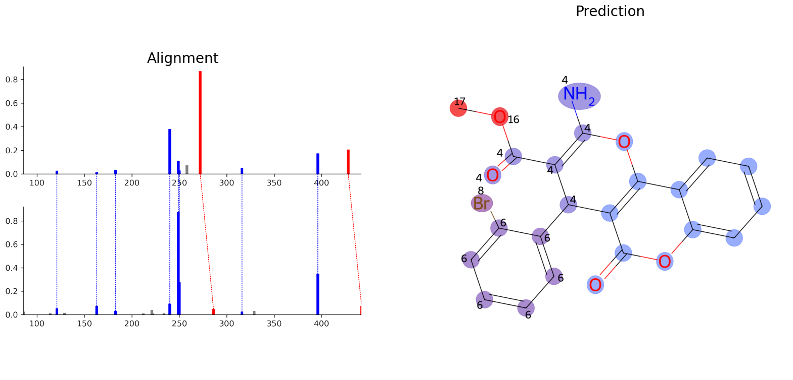

Basics Tutorial
from modifinder import ModiFinder
from matplotlib import pyplot as plt
c1 = "CCMSLIB00010113829"
c2 = "CCMSLIB00010125628"
helpers_array = ['CCMSLIB00010114304']
mf = ModiFinder(c1, c2, helpers=helpers_array, mz_tolerance = 0.01, ppm_tolerance = 40, ratio_to_base_peak=0.01, normalize_peaks=True)
img_alignment = mf.draw_alignment(c1, c2)
probs = mf.generate_probabilities()
img_prediction = mf.draw_prediction(probs, c1, show_legend=False, show_labels=True, shrink_labels=True, size=(1000, 1000), annotation_scale = 0.6)
fig, ax = plt.subplots(1, 2, figsize=(20, 10))
ax[0].imshow(img_alignment)
ax[0].set_title('Alignment', fontsize=20)
ax[1].imshow(img_prediction)
ax[1].set_title('Prediction', fontsize=20)
for a in ax:
a.axis('off')
plt.show()
